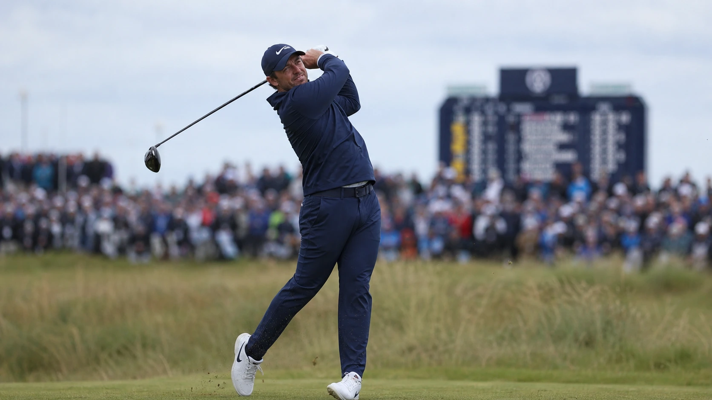

Rory McIlroy starts Saturday's Moving Day at the 2026 Genesis Scottish Open in prime position, sharing the lead at 9-under par with England's Jordan Smith and South Korea's Tom Kim. However, with the tournament favorite facing a jammed Renaissance Club leaderboard, his cushion is microscopic. A staggering 12 players sit within two strokes of the lead, and 37 are within five, setting up an intense links shootout. McIlroy will share the penultimate group with Matt Fitzpatrick (8-under), while defending champion Chris Gotterup and a home-backed Robert MacIntyre (both 7-under) wait to strike.
| POS | PLAYER | TO PAR |
|---|---|---|
| T1 | J. Smith | -9 |
| T1 | T. Kim | -9 |
| T1 | R. McIlroy FAV | -9 |
| T4 | M. Fitzpatrick | -8 |
| T4 | M. Lee | -8 |
| T6 | N. Von Dellingshausen | -7 |

A Packed House at the Renaissance Club: Moving Day Gridlock
Rory McIlroy enters Saturday exactly where a pre-tournament favorite wants to be: sitting at the top of the board with a fine-tuned golf swing and with Scottie Scheffler already on a flight home. But any illusions of a comfortable cruise around the Renaissance Club are quickly dispelled by looking at the numbers stack below him. This is not a leaderboard with clear separation; it is a gridlocked freeway of elite talent ready to take advantage of any slip-up.
McIlroy shares the 36-hole lead at 9-under par with England's Jordan Smith and South Korea's Tom Kim. But the real story is the depth of the chasing pack. A dozen players are clustered within two shots of the lead, and 37 players sit within five. On a modern links course where soft conditions allow for aggressive approach play, a two-shot lead can evaporate in a single hole. Moving Day is primed to be a pure shootout, and the field is hunting in packs.
Rory McIlroy’s Birkdale Blueprint and the Quest for No. 31
McIlroy has played superb, stress-free golf through two rounds, posting scores of 65 and 66. His driving has been a masterclass in power and trajectory control, and his putter has been reliable. His history in North Berwick is unmatched—having won the title here in 2023, finished runner-up last year, and never finished outside the top five in three career visits. The modern, links-style layout fits his eye and high ball flight perfectly.
A victory on Sunday would mark a significant milestone: his second Scottish Open title and his 31st career PGA Tour win. More importantly, it would end a dry spell dating back to his spring run, which included a career Grand Slam bid at Augusta. With the Open Championship at Royal Birkdale just one week away, McIlroy is utilizing this week to sharpen his links-style execution. Entering Birkdale off a dominant performance in Scotland is exactly the blueprint he would have drawn up for himself.
The Chasing Pack: Fitzpatrick’s Putter and Gotterup's Aggression
The immediate threat to the leaders is Matt Fitzpatrick, who will play alongside McIlroy in the penultimate group. Fitzpatrick shot a clean 65 on Friday, highlighted by an extraordinary run of five consecutive birdies on the back nine. As the Matt Fitzpatrick golf odds shift ahead of the weekend, the Englishman's exceptional links record makes him a formidable opponent. His ability to navigate tricky crosswinds with low-spin ball flight is a proven weapon on this terrain.
Lurking just one shot further back at 7-under is the defending champion, Chris Gotterup. Gotterup is searching for his fourth victory of a breakout 2026 season, coming fresh off a win at the John Deere Classic. His high-stress par-save on the 18th hole on Friday proved his grit under pressure. Joining Gotterup at 7-under is Scotland's own Robert MacIntyre, the 2024 champion, who will have a vociferous home gallery pushing him forward. In conditions like these, home backing is a powerful psychological asset.
Royal Birkdale in Sight: The Open Exemption Scramble
For the elite at the top, this week is about trophies and major preparation. But for a significant portion of the field, the stakes are career-defining. The Genesis Scottish Open represents the final opportunity to qualify for next week's Open Championship at Royal Birkdale, with three spots available to the highest finishers not already exempt.
This adds an extra layer of tension to the weekend rounds. Players like Germany's Nicolai Von Dellingshausen, currently ranked 258th in the world, are fighting not just for a leaderboard spot, but for a life-altering ticket to a major championship. The pressure of playing for exemptions frequently leads to wild swings on the leaderboard, as players are forced to balance conservative course management with the aggression required to secure a qualifying place.
The Raw Read
Rory McIlroy is the clear favorite, and deservedly so. He has shown no signs of vulnerability through 36 holes, and his comfort level around the Renaissance Club is clear. If McIlroy plays his Saturday round with the same mechanical efficiency he displayed on Thursday and Friday, he will establish the benchmark for the field.
But sitting at 9-under with a dozen players within striking distance is not a position that allows for defensive tactics. The soft links turf rewards aggressive iron play, and the field will be hunting flags. McIlroy must keep his foot on the accelerator. If he relaxes, Smith, Kim, Fitzpatrick, and a hungry pack of major champions and Birkdale hopefuls are ready to run him down. Moving Day is set to be a classic links battle.
Frequently Asked Questions
Who leads the 2026 Scottish Open going into Round 3?
Rory McIlroy, Jordan Smith, and Tom Kim share a three-way lead at 9-under par at the Renaissance Club.
Who is Rory McIlroy paired with in Round 3?
McIlroy is paired with Matt Fitzpatrick, who sits one stroke behind the leaders at 8-under par. They will tee off in the penultimate group on Saturday.
How many players are in contention?
The leaderboard is exceptionally crowded, with 12 players within two strokes of the lead and 37 players within five shots entering Moving Day.
Did Scottie Scheffler make the cut?
No. The world No. 1 shot rounds of 68 and 72 to finish at even par, missing the cut line by two shots and ending his streak of 78 consecutive made cuts.
What would a win mean for McIlroy?
A victory would give McIlroy his second Scottish Open title, his 31st career PGA Tour victory, and maximum momentum heading into the Open Championship at Royal Birkdale.
Why is the Renaissance Club so low-scoring?
The course offers ample birdie opportunities on its par-5s and short par-4s when the weather is calm, though coastal winds off the Firth of Forth can quickly raise the scoring average.